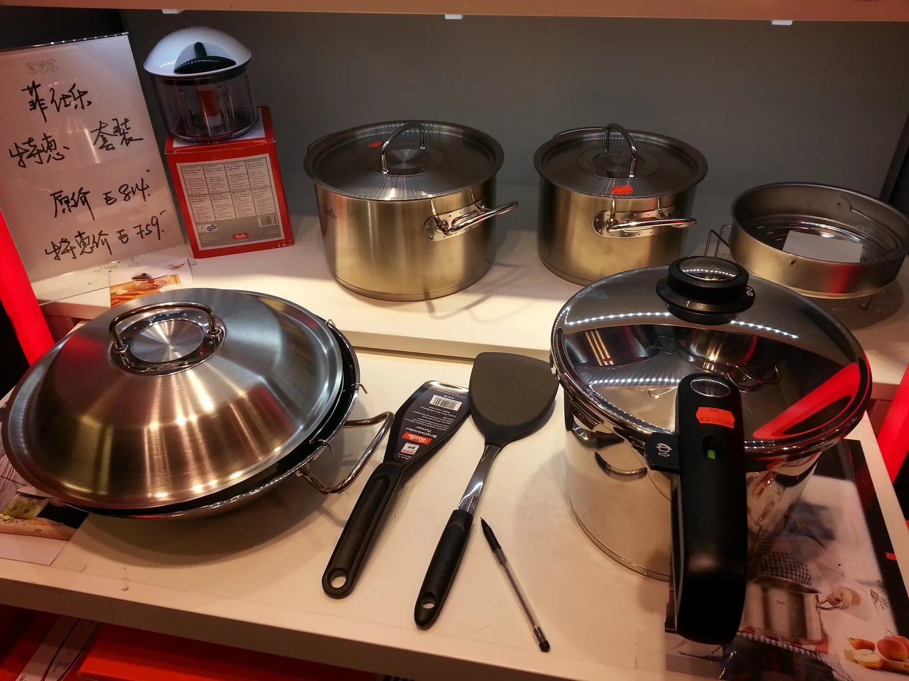
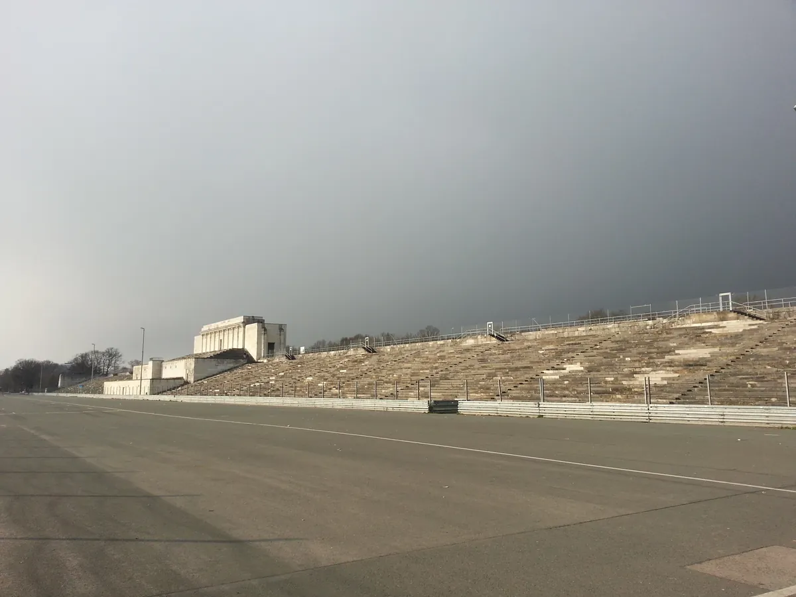
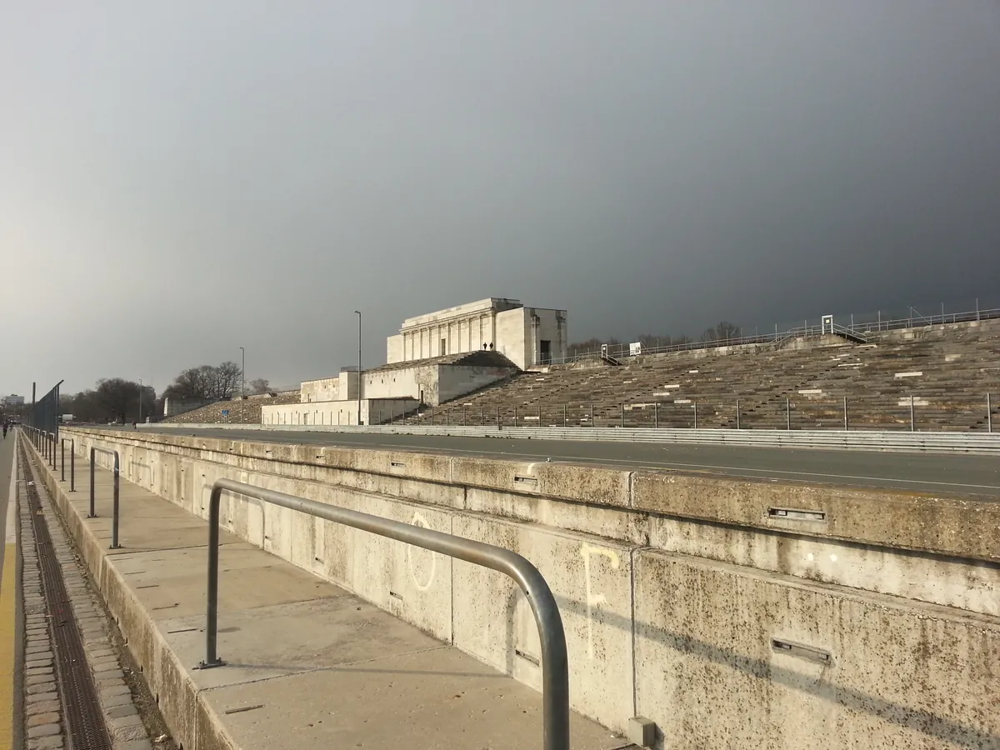
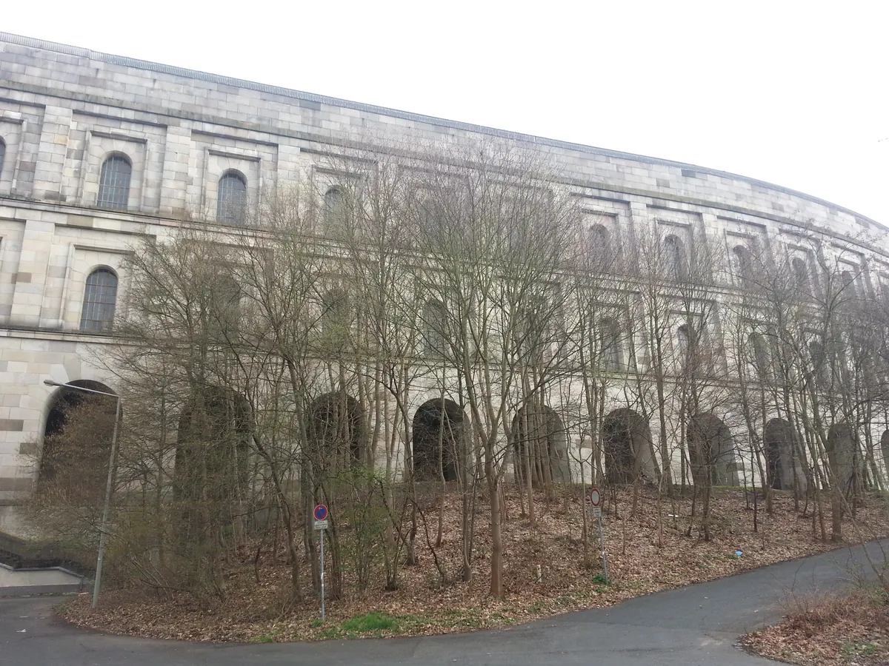
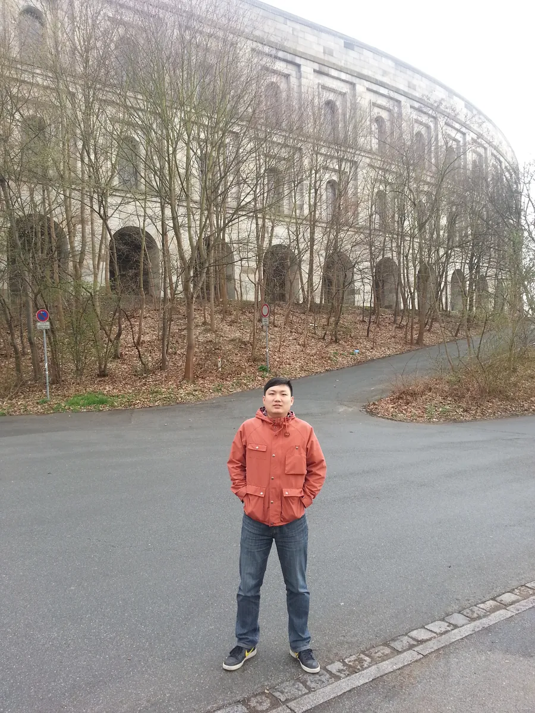

2016 年，又一次纽伦堡——诺托之夜，和这座城市的前世今生
Nuremberg again in 2016 — Roto's night, and the city's past and present.

2016 年，又一次纽伦堡——还是为了 FENSTERBAU FRONTALE 门窗展去的纽伦堡。这个展从 1988 年开始由纽伦堡会展公司（NürnbergMesse）主办，两年一届，是全球门窗幕墙行业公认的头部展会。所以严格说，这不是一次新的行程，是四年里第二次踩在同一个展馆里——跟 2012 年那次隔了两届，人和企业都比第一次熟络了不少。
诺托之夜：帐篷、猪肘子和啤酒里的德国式待客


这一年印象最深的不是白天的展台，是晚上的"诺托之夜"。诺托（Roto）在展馆旁边的空地上搭了一大片帐篷，晚上请客户和经销商过去吃饭。烤猪肘子外皮脆得能听见响，配的是酸菜和土豆泥，啤酒是敞开喝的那种。
这其实是德国贸易展的一个经典套路：白天在展馆里谈技术、谈订单，晚上企业自己包一片场地办"XX 之夜"，把客户、经销商、媒体拉到一个更放松的场合里维系关系。搭帐篷办流水席式的晚宴，在巴伐利亚这个啤酒文化的核心地带尤其常见——猪肘子、酸菜、土豆泥、啤酒这一套组合，基本就是巴伐利亚待客的标准模板，展会期间的企业之夜大多照这个路子办。诺托愿意年复一年地在展会现场搭这么大一片帐篷请客，某种程度上也是一种信号：这家公司把"展会"当成经营客户关系的正式场合，不只是摆摊卖货。
纽伦堡这座城市，值得多说两句
纽伦堡这座城市，表面上现在的身份是"会展之城"——门窗展、玩具展、消费品展轮番在这里办，但它的前世远比这个厚重得多。
历史上，纽伦堡曾是神圣罗马帝国皇帝直辖的核心城市之一，好几任皇帝在这里出生或长期居住，靠着地处贸易要道的位置，中世纪时期就发展成手工业和商业都很发达的自由城市，画家丢勒（Albrecht Dürer）就是纽伦堡人。这份历史分量后来被纳粹拿来利用——1933 年希特勒把纽伦堡定为"帝国党代会城市"，此后每年都有数十万纳粹党员从德国各地赶到这里，为期一周的 party 集会，城市东南郊专门建了占地超过 16 平方公里的党代会集会场，1935 年那部臭名昭著的反犹太《纽伦堡法案》也是在这里颁布的。这段历史让纽伦堡在二战末期成了盟军的重点轰炸目标，颇具中世纪风貌的老城几乎被夷为平地，战后是按照"修旧如旧"的方式在废墟上重建出来的。
战争结束后，历史上第一个国际军事法庭——纽伦堡审判，又选在了这座城市。某种意义上，这座城市在 20 世纪同时经历了纳粹的巅峰狂热和对纳粹的清算，这在德国所有城市里都是很特殊的一段轨迹。战后的纽伦堡渐渐归于平静，重新变回一座区域中心城市，后来靠着会展业（NürnbergMesse）和制造业（西门子的诞生地也在这里）慢慢找回了自己的经济位置。
站在今天再看，一个曾经承载过帝国荣光、又被纳粹历史深度绑定、之后靠废墟重建走出来的城市，现在变成了全球门窗行业每两年准时聚一次的地方——这种反差，是我在展馆里吃着烤猪肘子的时候完全想不到的。


一座城市可以把最疯狂的历史和最平静的现在，安放在同一片土地上；企业也一样，愿意花一个晚上请客户吃顿家常饭，比任何一句品牌口号都更值钱。
——董立鑫 海鑫汇创始人兼执行总裁，新加坡世贸秘书长兼首席运营官
本文整理自董立鑫（Bruce Dong）海外产业考察记录，首发于海鑫汇。